السلسلة 8
الشاحنة (صنف C) · 20 سؤال بالصوت. حاول تجاوب بوحدك، من بعد شوف الجواب.
السؤال 1
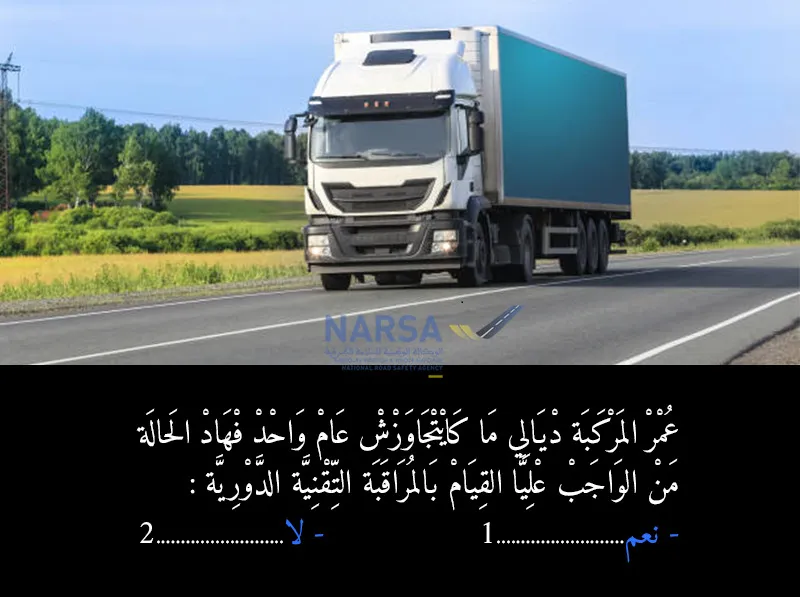
بيّن الجواب
الجواب الصحيح: 2
فـ مدونة السير المغربية، المراقبة التقنية للمركبات كتكون ضرورية ابتداءً من مرور سنة على أول استعمال ديال السيارة (تاريخ الشراء أو أول تسجيل).
بمعنى:
إذا كانت المركبة عمرها ما فاتش عام (يعني ما كملاتش 12 شهر)،
ماشي ضروري تدير المراقبة التقنية الدورية، حيث باقي فـ الفترة اللي فيها المركبة كتعتابر جديدة.
المرجع القانوني:
هادشي كيجي من القانون رقم 52.05 المتعلق بـ مدونة السير على الطرق،
وخصوصاً فـ المرسوم رقم 2.10.421 المتعلق بالمراقبة التقنية،
اللي كينص على أن أول مراقبة تقنية كتكون بعد مرور سنة من أول استعمال.
السؤال 2
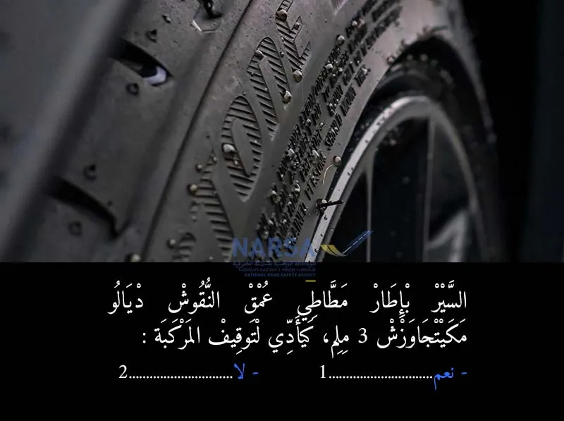
بيّن الجواب
الجواب الصحيح: 1
إذا انخفض عمق النقوش المنحوتة في الشريط الدارج للإطار المطاطي عن المستوى المحدد من لدن الإدارة أو إذا كانت به تمزقات أو شقوق تعري القماش على الحواشي أو على الشريط الدارج؛
البنذ (😎 من المادة 103 من مدونة السير ، يصدر الأمر بتوقيف المركبة إلى حين انتهاء المخالفة ؛
البنذ (16) من المادة 184 مخالفة من الدرجة الأولى (400 درهم في حالة الأداء الفوري )
مخالفة عن كل عجلة
السؤال 3
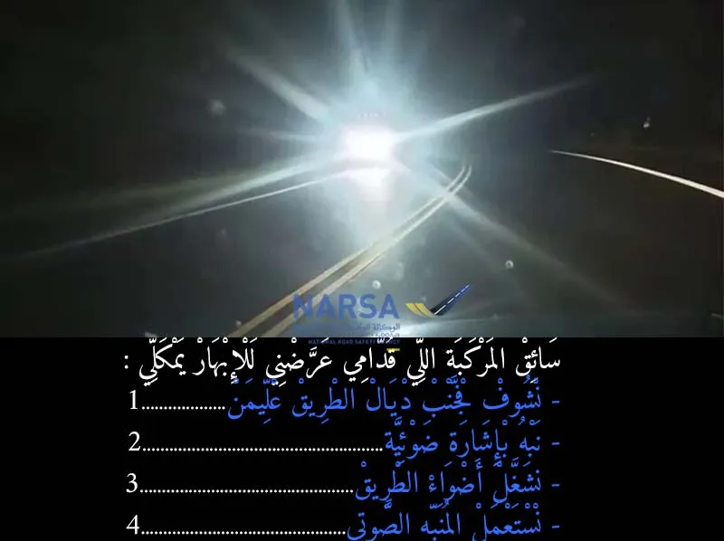
بيّن الجواب
الجواب الصحيح: 1 و 2
إلى تعرّضتي للإبهار (يعني الضوء القوي من السيارة اللي قدامك كيضرب فعينيك)، خاصك:
تشوف فجنب الطريق من جهة اليمين: باش متبقاش مباشرة مقابل الضوء القوي وتبقى محافظ على التركيز.
تنبه السائق الآخر بإشارة ضوئية قصيرة: باش تفهمو باللي كيعميك بالضو ديالو، يمكن ناسي مطفاهش.
السؤال 4
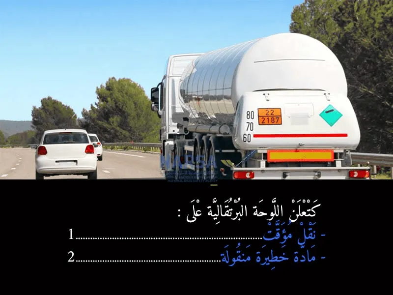
بيّن الجواب
الجواب الصحيح: 2
اللوحة البرتقالية التي تراها على الشاحنات والصهاريج، خاصة تلك التي تنقل مواداً سائلة أو غازية، هي علامة دولية 🌍 تدل على أن المركبة تقوم بنقل مادة خطيرة ⚠️. هذه اللوحات جزء أساسي من نظام ترقيم المواد الخطرة (ADR)، وهي توفر معلومات حيوية لرجال الإغاثة والدفاع المدني في حال وقوع حادث 💥.
الجزء العلوي من اللوحة (عادةً رقم من رقمين أو ثلاثة) يشير إلى طبيعة الخطر (مثل قابلية الاشتعال، التآكل، الانفجار...).
الجزء السفلي (رقم من أربعة أرقام) هو الرقم التعريفي للمادة نفسها (UN number)، والذي يحدد المادة الخطرة بالضبط.
لذلك، رؤية هذه اللوحة تعني أن عليك توخي الحذر والمسافة لأنها شاحنة تحمل مادة قد تكون خطيرة. 🚒
السؤال 5
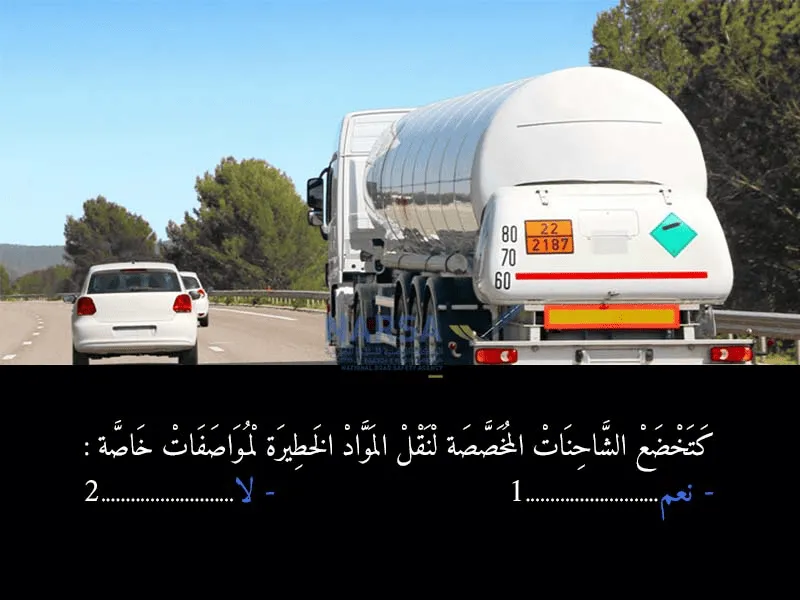
بيّن الجواب
الجواب الصحيح: 1
بالطبع! 🚛 المواد الخطيرة (مثل الوقود، المواد الكيماوية، الغازات القابلة للاشتعال) تتطلب أقصى درجات الحذر والسلامة عند نقلها. ⚠️ لذلك، فإن الشاحنات والصهاريج المخصصة لهذا النوع من النقل يجب أن تستجيب لمواصفات تقنية صارمة جدًا ومعايير أمان خاصة، والتي تفرضها وتراقبها مدونة السير بالمغرب والاتفاقيات الدولية (مثل اتفاقية ADR). 📜 هذه المواصفات تشمل تصميم الصهريج، أنظمة الفرملة، تجهيزات السلامة، علامات الخطر (كاللوحة البرتقالية التي رأيناها سابقًا)، وغيرها. 👷♂️ الهدف هو حماية الأرواح والبيئة من أي خطر محتمل. 🌱
السؤال 6
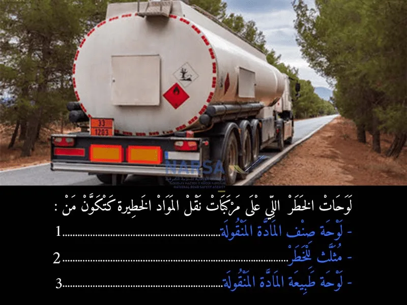
بيّن الجواب
الجواب الصحيح: 1 و 3
لوحات الخطر على مركبات نقل المواد الخطرة تتكون أساسًا من:
لوحة صنف المادة (الماسية): تُظهر نوع الخطر العام للمادة (مثل قابلية الاشتعال 🔥، السمية ☠️، أو الإشعاع ☢️).
اللوحة البرتقالية المستطيلة: تُقدم معلومات محددة:
الرقم العلوي: رمز طبيعة الخطر (مثل "33" للاشتعال الشديد).
الرقم السفلي: الرقم الأممي (UN Number) الخاص بالمادة (رقم تعريفها الدولي 🔢).
هذه اللوحات ضرورية لتزويد فرق الطوارئ بمعلومات فورية عن طبيعة المادة الخطرة في حالة الحوادث، لضمان سلامتهم والتعامل الصحيح مع الوضع. 🚛⚠️
السؤال 7
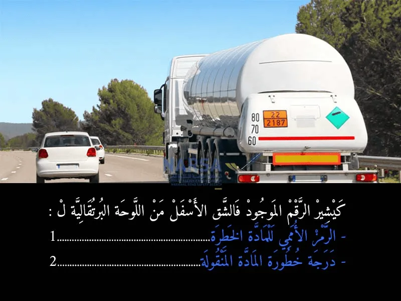
بيّن الجواب
الجواب الصحيح: 1
يشير الرقم الموجود في الشق الأسفل من اللوحة البرتقالية لـ:
الرقم الأممي للمادة الخطرة (UN Number) 🌍: هذا الرقم هو بمثابة "بطاقة هوية" للمادة الخطرة التي يتم نقلها. كل مادة خطرة لها رقم خاص بها معترف به دوليًا. فمثلاً، في الصورة نرى الرقم "2187" أسفل اللوحة. 🧐
درجة خطورة المادة المنقولة (Hazard Identification Number أو Kemler Code) 🔥: هذا الرقم (الموجود في الشق العلوي من اللوحة، وهو "80" في الصورة) يشير إلى نوع الخطر الرئيسي للمادة المنقولة ومدى شدته. الأرقام لها دلالات محددة، فمثلاً:
'2' يعني انبعاث غازات.
'3' يعني مادة قابلة للاشتعال (سائلة).
'4' يعني مادة قابلة للاشتعال (صلبة).
'5' يعني مادة مؤكسدة.
'6' يعني مادة سامة.
'8' يعني مادة أكالة (كاوية).
'9' يعني خطر متعدد أو مختلف.
تكرار الرقم (مثل '88') يعني شدة عالية لهذا الخطر.
السؤال 8
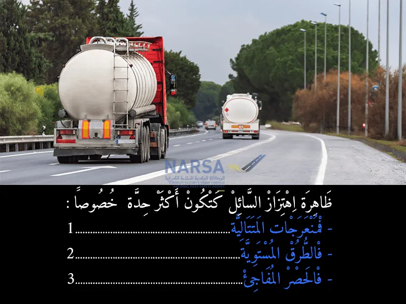
بيّن الجواب
الجواب الصحيح: 1 و 3
ظاهرة اهتزاز السائل (أو "تموج" السائل) تكون أكثر حدة خصوصاً في:
المنعرجات المتتالية. ✅ (عند الدخول في سلسلة من المنعرجات، يندفع السائل داخل الصهريج من جانب إلى آخر بشكل متكرر وقوي، مما يؤثر بشكل كبير على توازن الشاحنة ويزيد من خطر الانقلاب.) 🔄
الطرق المستوية. ❌ (على الطرق المستوية، تكون حركة السائل أقل حدة وأكثر استقرارًا، إلا إذا كانت هناك مطبات أو تغييرات مفاجئة في السرعة.) 🛣️
الفرملة المفاجئة. ✅ (عند الفرملة المفاجئة، يندفع السائل بقوة إلى الأمام نحو مقدمة الصهريج، مما يخلق قوة دفع كبيرة للأمام قد تؤثر على استقرار الشاحنة وتزيد من مسافة التوقف، أو حتى تتسبب في اصطدام الحمولة بالمقدمة.) 🛑
السؤال 9
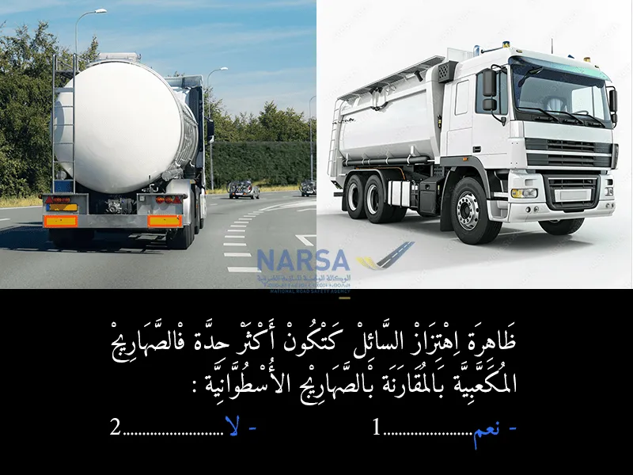
بيّن الجواب
الجواب الصحيح: 1
ظاهرة اهتزاز السائل داخل الصهاريج المكعبة تكون أشد وأخطر مقارنة بالصهاريج الأسطوانية 🛢.
هذا بسبب الزوايا الحادة داخل الصهاريج المكعبة التي تسمح للسائل بالتحرك بسرعة وبكميات كبيرة أثناء الاهتزاز، مما يؤثر على توازن المركبة واستقرارها أثناء السير 🚚⚠.
بينما الصهاريج الأسطوانية تسمح للسائل بالتحرك بشكل أكثر انسيابية، مما يقلل من قوة الاهتزاز ويزيد من ثبات السيارة
السؤال 10
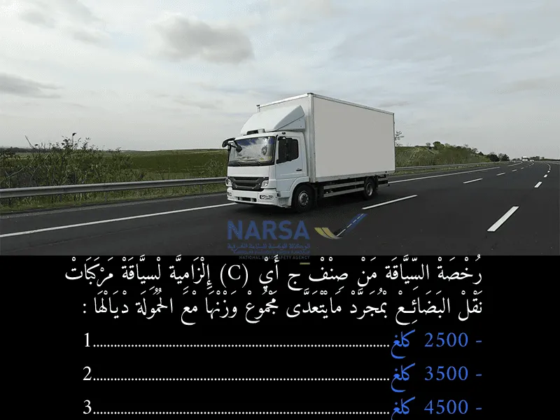
بيّن الجواب
الجواب الصحيح: 2
وفقًا لمدونة السير المغربية، فإن رخصة السياقة من صنف "C" (أو "ج") ضرورية لقيادة مركبات نقل البضائع بمجرد أن يتعدى مجموع وزنها الأقصى المسموح به (الوزن الإجمالي للمركبة مع حمولتها) 3500 كيلوغرام. 🚚
لذلك، الإجابة الصحيحة هي:
2500 كلغ ❌
3500 كلغ ✅
4500 كلغ ❌
السؤال 11
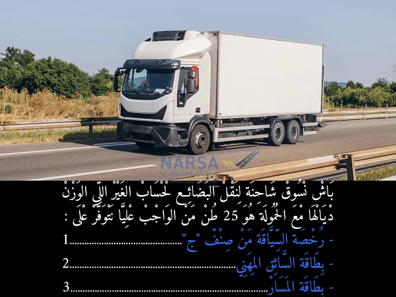
بيّن الجواب
الجواب الصحيح: 1 و 2
لسياقة شاحنة لنقل البضائع لحساب الغير اللي الوزن ديالها مع الحمولة هو 25 طن (وهو وزن يتجاوز 3.5 طن)، من الواجب عليا توفر على:
- رخصة السياقة من صنف "ج" (Permis C): ✅
- بطاقة السائق المهني (Carte Professionnelle de Conducteur): ✅
السؤال 12
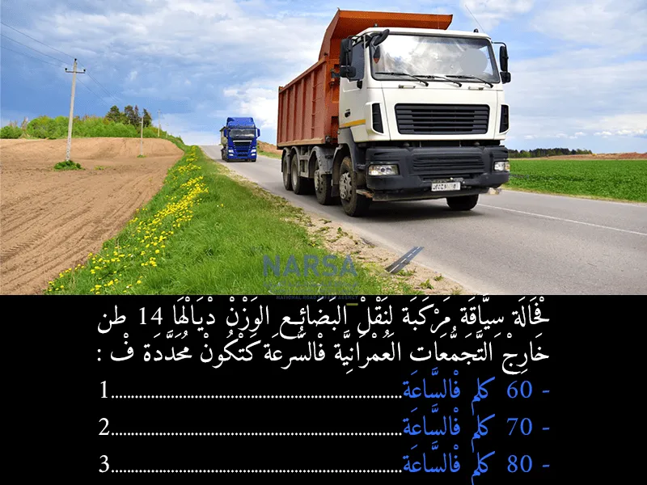
بيّن الجواب
الجواب الصحيح: 3
حدود السرعة لمركبات نقل البضائع الثقيلة (أكثر من 14 طن) خارج المدن في المغرب عادة ما تكون 80 كلم/ساعة لضمان السلامة بسبب طبيعة هذه المركبات ووزنها. يجب على السائقين الالتزام بهذه السرعات لتجنب المخالفات والحفاظ على السلامة الطرقية. 🚚🅿️
السؤال 13
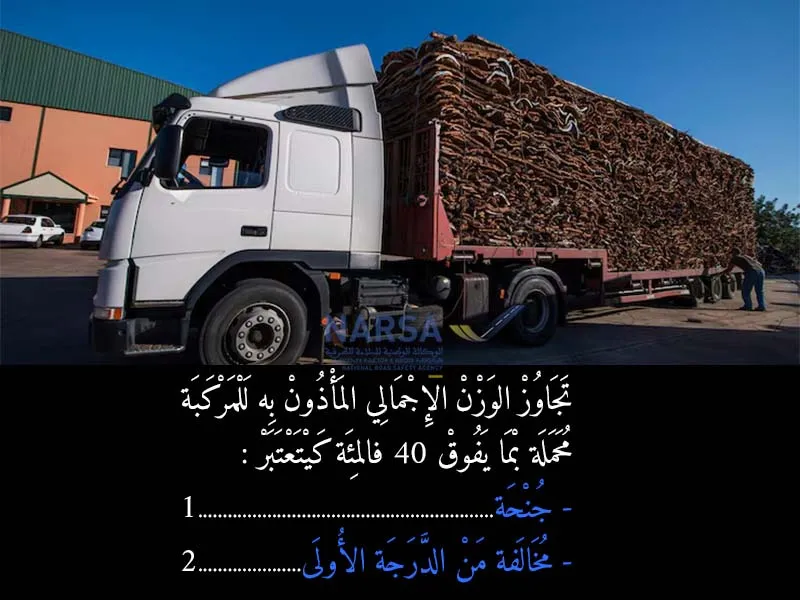
بيّن الجواب
الجواب الصحيح: 1
المادة 177
يعاقب مالك المركبة عن تجاوز الوزن الإجمالي المأذون به للمركبة محملة، المقيد في شهادة التسجيل، بما يفوق40 % بغرامة من ألف ومائتين (1.200) إلى ألفي (2.000) درهم عن كل طن من الحمولة الزائدة.
* يعتبر كل جزء من الطن يتجاوز خمسمائة كيلوغرام بمثابة طن.
يُعتبر تجاوزًا كبيرًا وخطيرًا لقدرة المركبة، مما يؤثر على السلامة الطرقية.
لذلك، فإن هذا النوع من التجاوز يُصنف كـ:
جنحة ✅
السؤال 14
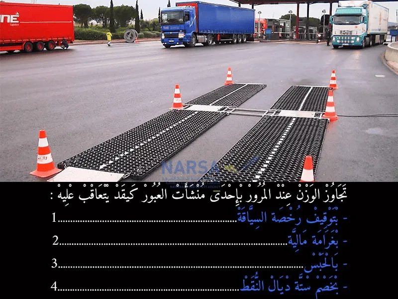
بيّن الجواب
الجواب الصحيح: 1 و 2 و 3
وفقًا لمدونة السير المغربية، تجاوز الوزن المسموح به (الحمولة الزائدة) يعتبر مخالفة خطيرة ويعاقب عليها بعدة تدابير:
توقيف رخصة السياقة ⏳: نعم، يمكن أن يتم توقيف رخصة السياقة للسائق الذي يتجاوز الحمولة المسموح بها، وتختلف مدة التوقيف حسب درجة تجاوز الوزن وتكرار المخالفة.
غرامة مالية 💰: نعم، تفرض غرامات مالية على سائق الشاحنة أو مالكها أو شركة النقل، وتكون هذه الغرامات تصاعدية بناءً على مقدار الوزن الزائد.
بالحبس 🚫: في الحالات القصوى والخطيرة جدًا من تجاوز الوزن أو تكرار المخالفة بشكل متعمد، قد ينص القانون على عقوبات حبسية، لكنها ليست العقوبة الأساسية في غالب الأحيان وتكون استثنائية.
السؤال 15
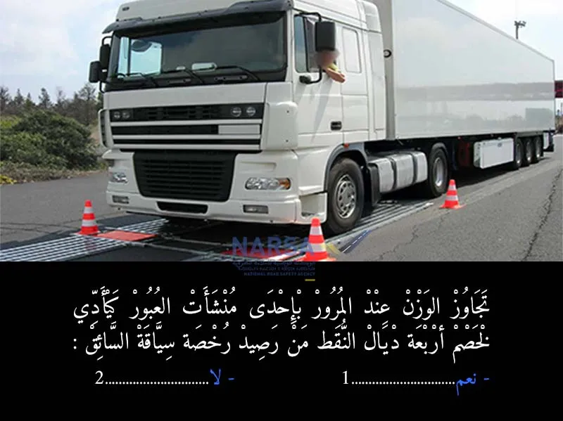
بيّن الجواب
الجواب الصحيح: 1
يعاقب عن تجاوز الوزن المأذون به عند المرور بإحدى منشآت العبور، بالحبس من شهر إلى ثلاثة أشهر وبغرامة من ألف وخمسمائة (1.500) إلى أربعة آلاف (4.000)درهم عن كل طن زائد أو بإحدى هاتين العقوبتين فقط.
يعتبر كل جزء من الطن يتجاوز خمسمائة كيلوغرام بمثابة طن.
يمكن للمحكمة، علاوة على ذلك، أن تقرر توقيف رخصة السياقة لمدة أقصاها سنة.
مع سحب اربعت نقاط
السؤال 16
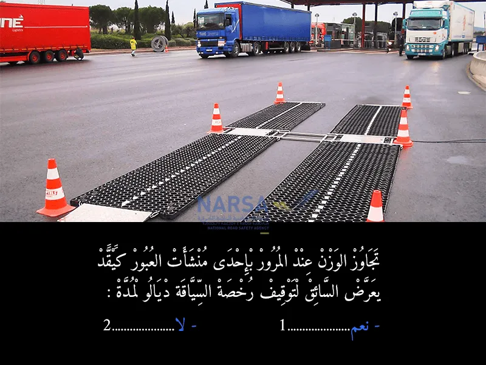
بيّن الجواب
الجواب الصحيح: 1
عند تجاوز الوزن المسموح به على الشاحنات، تتعرض رخصة السياقة للسحب. المدة تعتمد على حجم التجاوز وتكرار المخالفة. قد تكون سنة واحدة في بعض الحالات، ويمكن أن تصل إلى ثلاث سنوات في الحالات الأكثر خطورة أو تكرارًا. ⚖️🚛
السؤال 17
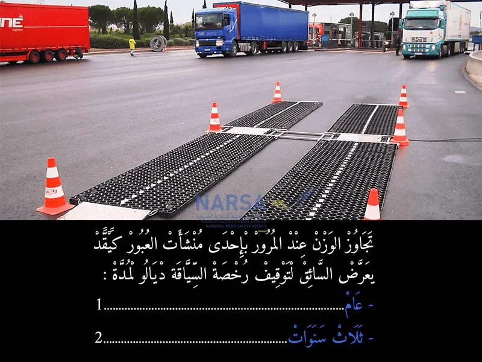
بيّن الجواب
الجواب الصحيح: 1
عند تجاوز الوزن المسموح به على الشاحنات، تتعرض رخصة السياقة للسحب. المدة تعتمد على حجم التجاوز وتكرار المخالفة. قد تكون سنة واحدة في بعض الحالات، ويمكن أن تصل إلى ثلاث سنوات في الحالات الأكثر خطورة أو تكرارًا. ⚖️🚛
السؤال 18
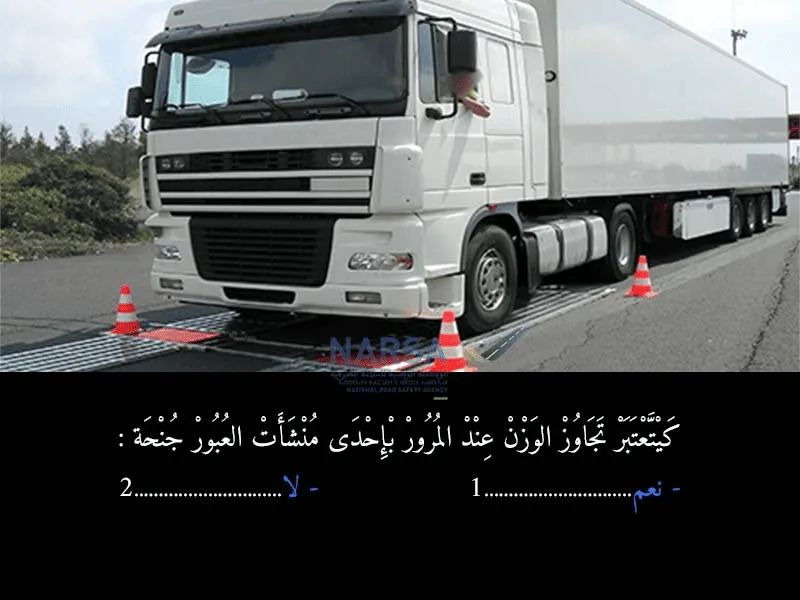
بيّن الجواب
الجواب الصحيح: 1
يعاقب عن تجاوز الوزن المأذون به عند المرور بإحدى منشآت العبور، بالحبس من شهر إلى ثلاثة أشهر وبغرامة من ألف وخمسمائة (1500) إلى أربعة آلاف (4000) درهم عن كل طن زائد أو بإحدى هاتين العقوبتين فقط. يعتبر كل جزء من الطن يتجاوز خمسمائة كيلوغرام بمثابة طن.
السؤال 19
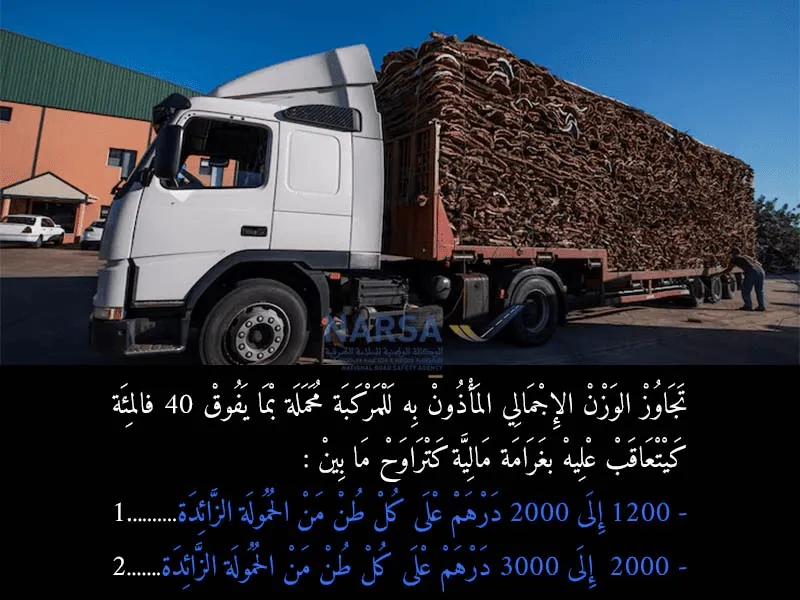
بيّن الجواب
الجواب الصحيح: 1
📘 المرجع القانوني:
تنص المادة 177 من مدونة السير على الطرق على ما يلي:
> "يعاقب مالك المركبة عن تجاوز الوزن الإجمالي المأذون به للمركبة محملة، المقيد في شهادة التسجيل، بما يفوق 40%، بغرامة من 1200 إلى 2000 درهم عن كل طن من الحمولة الزائدة. ويُعتبر كل جزء من الطن يتجاوز 500 كيلوغرام بمثابة طن
السؤال 20
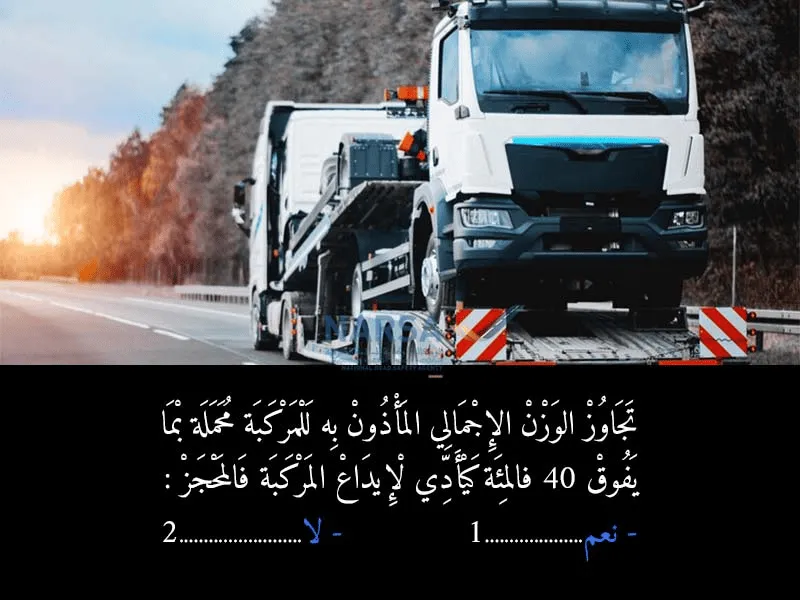
بيّن الجواب
الجواب الصحيح: 1
المادة 177
يعاقب مالك المركبة عن تجاوز الوزن الإجمالي المأذون به للمركبة محملة، المقيد في شهادة التسجيل، بما يفوق 40 % بغرامة من ألف ومائتين (1200) إلى ألفي (2000) درهم عن كل طن من الحمولة الزائدة.
يعتبر كل جزء من الطن يتجاوز خمسمائة كيلوغرام بمثابة طن.
في حالة العود إلى ارتكاب المخالفة، داخل أجل سنة ابتداء من تاريخ صدور مقرر قضائي حائز لقوة الشيء المقضي به من أجل أفعال مماثلة، ترفع الغرامة إلى الضعف.
يعاقب بنفس العقوبات أعلاه كل مرسل أو وكيل بالعمولة أو شاحن أو مرسل إليه أو كل مصدر للأوامر تسبب أو شارك في ارتكاب المخالفة أو أصدر أوامر بذلك.